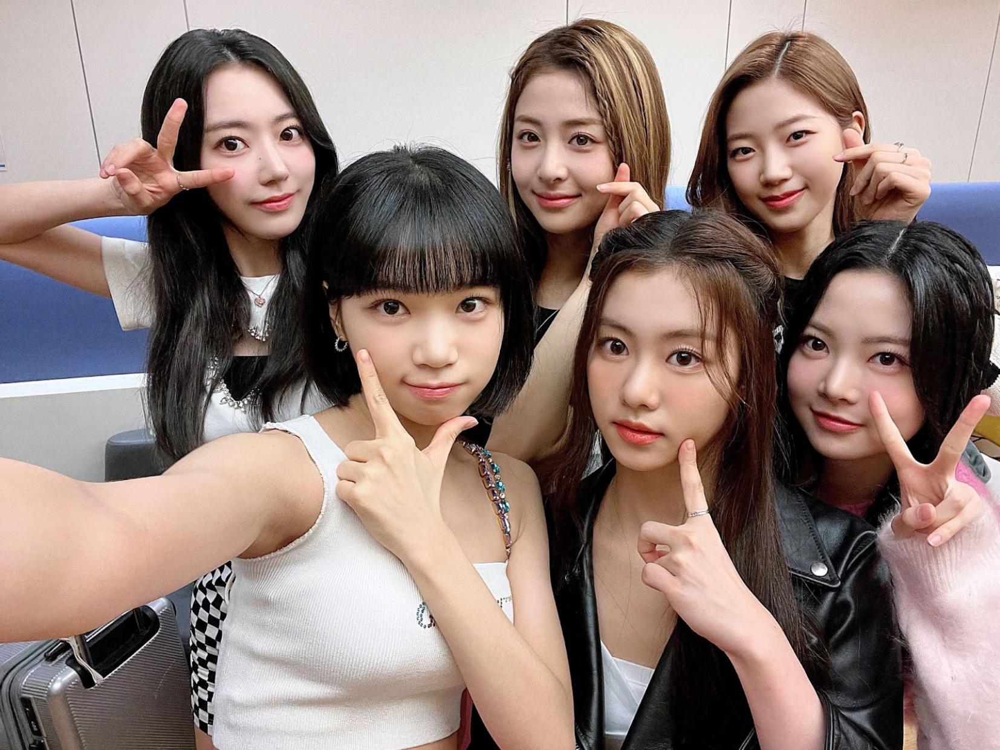

LE SSERAFIM Members Made "Uncomfortable" During Recent Fan Event — Agency Response Sparks Fury

A fan signing event for HYBE's girl group LE SSERAFIM has come under intense scrutiny after multiple attendees reported witnessing members visibly uncomfortable during interactions with certain fans, reigniting the ongoing debate about idol safety and fan behavior at close-contact events.
The incident occurred during a fan signing event held at COEX Mall in Seoul on Saturday, where approximately 200 fans had won the opportunity to meet the five-member group through an album purchase lottery. What should have been a celebratory occasion quickly turned controversial when videos began circulating on social media showing members Kazuha and Sakura appearing distressed during certain fan interactions.
Eyewitnesses reported that at least three separate incidents occurred throughout the two-hour event, with staff members eventually intervening in one case to remove a fan from the venue. However, it was the agency's initial response—or lack thereof—that has truly ignited fan outrage.
What Happened at the Event
According to fan accounts compiled on Korean online community forums, the most serious incident involved a male fan who allegedly made inappropriate comments to member Kazuha while she was signing his album. Multiple attendees in the queue reported hearing the exchange and described Kazuha's expression as "frozen" before staff stepped in.
"I was about four people behind in line," wrote one fan on the Naver community board. "I couldn't hear exactly what was said, but I saw Kazuha's face change completely. She looked like she wanted to disappear. The staff member next to her leaned in and then quickly escorted the fan away."
A separate incident reportedly involved a fan who attempted to hold Sakura's hand for an extended period despite her visible attempts to pull away. Video footage of this interaction has been viewed over 2 million times on Twitter, with fans expressing outrage at what they perceive as a violation of the idol's boundaries.
"These idols are human beings, not products you purchased with your album. The entitlement some fans feel is absolutely disgusting. We need to do better as a fandom." — Popular LE SSERAFIM fan account @protectlsrfm
The third reported incident was less clear but involved a fan allegedly taking photos at close range despite the event's strict no-photography policy during signing interactions.
Source Music's Controversial Response
Source Music, the HYBE subsidiary that manages LE SSERAFIM, released a statement approximately 18 hours after the event that many fans have criticized as inadequate. The statement, posted to the group's official fan community platform Weverse, acknowledged that "some situations arose that required staff intervention" but stopped short of condemning the behavior or announcing any policy changes.
"We are aware of concerns raised by fans regarding yesterday's fan signing event," the statement read. "Our staff responded appropriately to maintain a comfortable environment for both artists and attendees. We appreciate fans' understanding and continued support."
The vague wording and lack of concrete action sparked immediate backlash. Within hours, the hashtag #ProtectLESERAFIM was trending in South Korea and Japan, with fans demanding a more substantive response from the agency.
"'Responded appropriately'? If that were true, those videos wouldn't exist," wrote one commenter. "The members were clearly uncomfortable and staff did the bare minimum. This company makes billions and can't protect five women at a controlled event?"
The Broader Problem of Fan Event Safety
The LE SSERAFIM incident has reignited long-standing concerns about the safety of K-Pop idols at fan signing events, which are considered essential promotional activities in the industry. These events, where fans can interact one-on-one with idols for brief periods, have been the site of numerous documented incidents over the years.
Industry analysts point out that the lottery system used to select attendees—typically based on album purchases—does little to screen for potentially problematic behavior. Fans who purchase hundreds of albums to increase their lottery chances are not subject to any background checks or behavioral assessments.
"The current system prioritizes revenue over safety," explained Dr. Kim Min-ji, a professor of Korean popular culture at Yonsei University. "Companies have financial incentives to maximize album sales through these lottery systems, but there's no corresponding investment in protecting the artists who are essentially the product being sold."
Some agencies have implemented stricter policies in recent years, including increased security presence, physical barriers between idols and fans, and immediate ejection policies for rule violations. However, implementation remains inconsistent across the industry.
Fan Demands and Proposed Solutions
In the wake of the incident, organized fan groups have compiled a list of demands they are presenting to Source Music:
- Increased physical distance between idols and fans during signing interactions
- Mandatory pre-event briefings explicitly outlining prohibited behaviors
- Permanent bans from all future events for fans who violate boundaries
- Implementation of a reporting system for idols to flag uncomfortable interactions
- Additional female security staff positioned directly beside members
Some fans have also called for a temporary suspension of fan signing events until new safety protocols can be developed and implemented, though this is considered unlikely given the commercial importance of such events.
Members Remain Silent
None of the LE SSERAFIM members have publicly addressed the incident. Their social media accounts have been inactive since before the event, which fans interpret as either a company-mandated silence or the members' own desire for privacy during a difficult time.
The group is scheduled to continue their promotional activities for their latest album, including additional fan signing events over the coming weeks. Whether Source Music will implement any changes to these events remains to be seen.
What This Means for the Industry
The LE SSERAFIM incident is unlikely to result in industry-wide changes on its own, but it adds to a growing body of documented cases that advocacy groups hope will eventually force regulatory attention. Currently, there are no government regulations specifically addressing the safety of entertainers at fan events in South Korea.
For now, fans continue to organize, document, and demand better. As one widely-shared post summarized: "If companies won't protect our idols, we will. We're watching, we're recording, and we won't stop until things change."
AsianBus Wire has reached out to Source Music for additional comment and will update this story if a response is received.

💬 Comments